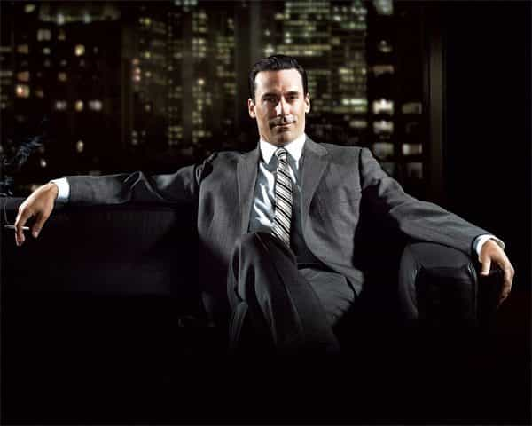
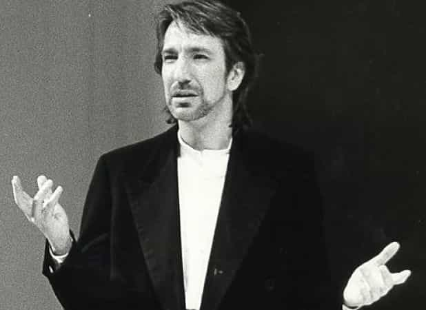
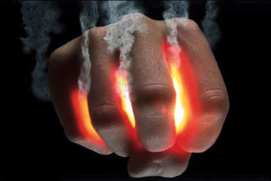

Corey is an iconoclast and the author of 'Man's Fight for Existence'. He believes that the key to life is for men to honour their primal nature. Visit his new website at primalexistence.com


Whether you are trying to pick up women, networking for business, taking upon the role of a leader, or simply want to improve your overall social connections and life itself, your vibrational energy is a critical factor of your entity that you should try to cultivate. By simply focusing on improving your vibe, you’ll become healthier, happier, and more successful along the way.
I had my doubts as to whether this energy (which has many names depending on who you ask) really exists or not, but I am becoming more and more aware of it with time and I can say for a fact that it is real. For example, we all know how the atmosphere feels different depending on if you’re at a party, a temple, a funeral, or by the ocean. We also know what it’s like being around someone who is full of joy and life as opposed to someone who just sucks all the energy out of the room. Women are especially adept at picking up this energy as their emotional state changes dramatically when being with a “fun” guy as opposed to the “creepy” guy.
Without making things too complicated, the two scales you should be aware of are the positive and negative energies as well as the level of power.
Positive energy refers to anything that gives off life enhancing vibe. People with positive energy make others around them feel comfortable, excited, and inspired. People want to be around those who are positive because they are attracted to the positive aura. On the other hand, people with negative energy are those who drain the positive energy. They sulk, they complain, they make others feel at unease, and their combined pessimism and bitterness makes people want to disassociate with them. Their insecurity and anger is apparent to all those around them even if they try their best to hide it.
Power is unrelated to the positive and negative energies and it refers to a person’s perceived status, capability, and the impact they can make in this world. In the manosphere, we are all familiar with the alpha/beta divide and that’s one example of how power applies to a man. Man of power exudes real confidence (not faked boasts), demands rightful respect, and possesses a strong will. He displays his power through his actions, his voice, his body language, and mentality. He often has abilities and status to prove his worth.
Everyone in the world, without exception, are defined mostly by these two factors alone. It only takes few seconds for a person to judge you based on your energy and power level upon meeting you for the first time, so it’s well worth the trouble of going through a bit of self-reflection to optimize these two vibrational energies. Follow the tips below to be the best version of yourself.
This gentleman exudes more energy and confidence than the latte-sipping, smartphone-addicted hipsters in their 20’s.
Considering the readers here it’s probably redundant to say this, but things like eating healthy, working out, sleeping well, not jerking off everyday, and having a balanced and fulfilling lifestyle will all elevate your energy levels. But above all, those who may be introverted and otherwise be running on low energy should try to go out more and spend more time in the sun. It’s always obvious when I meet someone who just seems to be drifting through life instead of living it. I don’t even have to ask to find out that that he spends most of his time on his computer while locked in his room by himself.

Not only does improved posture give you an appearance of confidence and power, but studies have shown that it will also lower your stress while boosting your testosterone.
For more information, watch this enlightening video on Alpha male body language:
Not the face you want to walk around with.
Along with your overall posture, your face is the most important visual cue that signals who you are. You should look comfortable and secure with a slight smile to convey confidence and warmth, and maybe even a bit of cockiness (think of Arnold Schwarzenegger during his bodybuilding days). Although tempting, looking fierce and tough will only work if you’ve already achieved a certain level of status or have an imposing body like Dwayne Johnson. And even if you can pull it off, too much of it will make you appear unapproachable, which isn’t a good thing.

People can tell more about you by feeling the energy behind your voice than by the actual words that are being spoken. Voice projects power and confidence as well as honesty, compassion, and authenticity. While many seem to focus on trying to maintain a low voice to sound masculine, I would say that it’s far more important to focus on speaking from your stomach, and speaking clearly without the rising inflection that makes you sound unsure of yourself (something that is starting to become normalized among men). Embrace your natural voice and make the best of it.
You are what you consume and the same is true for your mind. For example, we all know that music has a way of influencing our mood. Regularly listening to certain types of music will change your mood and even how you think about the world. It’s well worth reviewing your track list to weed out any music that may be bringing your energy level down. I admit with great shame that I used to listen to Creep by Radiohead along with many other melancholic songs during my blue-pill years. But no more. The music you listen to should either be uplifting and energizing or relaxing and sublime. There are far too many mainstream love songs by men that only traps men into blue-pill mindset.
Besides music, it’s also best to avoid all news media and social commentaries that do nothing but show you how shitty the world is. Yeah, it may be true, but the only thing matters is whether you’re going to do something about it or not. There’s no need to stoke the fire of your negativity if you’re not willing to take any action to fight the injustices of the world.

Same idea as the things you consume: if you surround yourself with negative people, work in a lousy environment, live in a dysfunctional culture, and so on, your energy vibrations will suffer. It’s best to remember that negativity is contagious. The same goes for everything that you attach yourself to: if you have attachment to griefs that make you sad or angry, or have a belief system and attitude towards the world that leaves you perpetually bitter, you’re going to emit nothing but negativity that repels people. Fight if you must, but don’t let that energy bottle up inside you, corroding you from within.

People of modern society are absolutely addicted to their thoughts. It’s not that thinking in itself is unhealthy, but people just do it too much and in the worst ways possible. For an illustration, imagine a man who sees an attractive girl. Instead of just approaching her to say something, stream of thoughts run through his mind: What should I say to not appear weird? What if she doesn’t like me because I’m _____? What if she freaks out? She looks busy texting on her phone, I better not bother her. I’ll probably seem creepy if I approach her from behind. She’s not even that hot (common male hamstering). She’s probably just another man-hating bitch. I’ll just approach another girl next chance I get.
During this whole time, the man is looking nervous while staring at the girl, giving off the uncomfortable “creep” vibe that he’s trying so hard to avoid. Of course, this is just one example. The same could be applied to just about any other situation where people think too much for their own good.
The best cure for excessive thinking is to scan your body and note how you feel. Don’t judge, don’t rationalize, don’t try to explain anything, but just observe. Instead of letting your thoughts run amok and trigger all sorts of unwanted emotions, it’s better to be grounded in your body. Become aware of your physical state and act upon what you desire. This obviously doesn’t mean that you become completely thoughtless and reckless, it just means that you are taking control of your being from where it matters. And with mastery of your self, you give off the optimal energy vibrations of life and self-assurance.
Read More: 3 Ways To Optimize Your Return On Investment